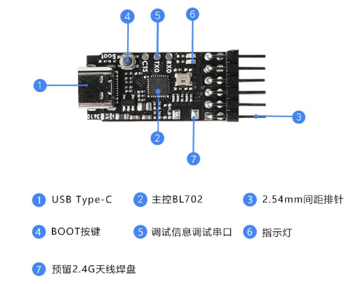

Sipeed RV-Debugger Plus
The Sipeed RV-Debugger Plus is a JTAG + UART debugging board and was created by Sipeed Technology based on the BL702 SoC. It integrates a JTAG debugging interface using the FTDI protocol, supporting online debugging and emulation. Purchase the debugger from the Sipeed Official Store.
This document provides instructions for driver installation and setup of the Sipeed RV-Debugger Plus debugger。
{kind=link}

Sipeed RV-Debugger plus
重要
Connection :
1.1 Before starting debugging, ensure the debugger is solely connected to the PC via Type-C and not connectedto the BL70xL DVK via JTAG.
1.2 Upon connection, if the debugger enters work mode successfully, both LEDs on the board will flash simultaneously and then one LED will go out; If only one LED remains on, it means the debugger has entered Boot mode, restart the debugger to verify proper functionality.
1.3 In case the debugger fails to enter work mode, it is recommended to obtain the latest firmware from the Sipeed GitHub and re-flash it.
Firmware Update :
2.1 Press the "Boot" button on the debugger, plug it into the computer to power up, let it enter Boot mode.
2.2 Flashing latest firmware, and restart debugger.
Windows
When using the Sipeed RV-Debugger Plus on Windows, it is essential to switch the driver to the Win USB driver
1.Connect the debugger's Type-C USB interface to the PC.
1.1 Within the Device Manager, under Ports, locate the debugger recognized as two serial ports,
1.2 Alternatively, under Universal Serial Bus controllers, identify the debugger as
USB Serial Converter AandUSB Serial Converter B重要
Potential Issues:
The debugger's port number should commence with
usb serial portIf the serial port in Device Manager appears as
USB Serial Device(COM*), the debugger is in Boot mode. Refrain from connecting it to the BL70xL DVK board yet, restart the debugger, then verify its operations in Device Manager.If no serial port is visiable in Device Manager, only
other devicesorUSB Serial Converter AandUSB Serial Converter Bare shown, download and flash the appropriate driver from the FTDI Official Website.
Once connected, download
zadig-2.4from the Sipeed website to replace the driver program. Download zadig-2.4
After downloading and running
zadig-2.4.exe, and select List All Devices under Options
Choose
JTAG Debugger (Interface 0), then selectWinUSBas the replacement driver and clickReplace Driver
Check Device Manager again. If one of the serial ports has been replaced with a
Universal Serial Bus Device, it signifies successful installation
The device driver for Sipeed RV-Debugger Plus has been effectively substituted with the WinUSB driver, allowing you to debug and emulate the BL702 SoC.
{kind=link}
{kind=link}
{kind=link}
{kind=link}